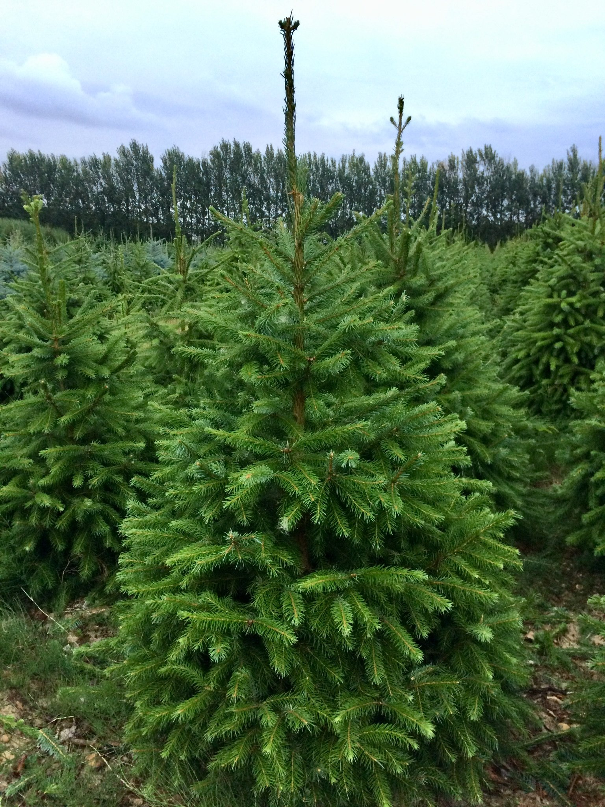

Norway Spruce
Choosing And Buying Your Tree
The type of tree you need depends on the style you like, how long you want it to last for and how much you want to pay. You can pick a Norway Spruce or a Fir tree growing in the ground, label it and return nearer the time to collect. A Norway Spruce can be supplied potted, rootballed or cut whilst a Fir will need to be cut (because of its extensive root system). Although we regularly stock trees up to about 12 foot, if you require anything larger please let us know as we will get larger trees to order from our other plantations. Measure the height of your room and work out how tall you need the tree to be. You do not want a tiny tree that looks lost in a high-ceilinged room or to end up having to chop a bit off the top off it. You would be surprised how often that happens!
Is this the tree for you?
- Pointed midgreen needles standing on tiny pegs
- Long cylindrical brown cones which hang down
- Natural range: Northern and Central Europe